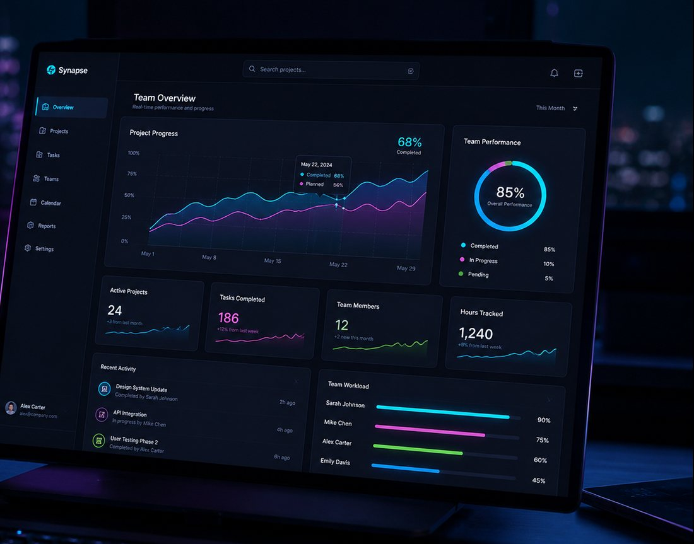

タスク管理ツールとチャットの更新を、AIが読み取って毎朝1枚に要約します。全員分の日報を読む時間を、話し合う時間に。
※画面はイメージです（架空のデータ）
チームが大きくなるほど、「誰が・何を・どこまで」が見えにくくなります。
毎朝チャットに流れる日報を、全員分読むだけで30分以上かかっている。
タスクが止まっていることに気づくのは、いつも締切の前日。
状況の共有だけで1時間。本題の議論に使える時間が残らない。
ボタンを押すと、画面を切り替えられます。
決済APIの連携（担当：高橋）
理由の推測：チャットで「仕様の確認中」という投稿のあと、動きがありません。
テスト環境の準備（担当：未定）
理由の推測：担当者が決まっていない可能性があります。
推測はあくまで手がかりです。声をかけるかどうかは、チームで判断してください。
※画面・数字はイメージです（架空のデータ）
タスク管理ツールとチャットの更新を読み取り、毎朝1枚のサマリーにまとめます。
更新が止まっているタスクを見つけ、詰まっていそうな理由の推測を添えて知らせます。
チーム全体とメンバー別の進み具合を、グラフで一覧できます。
1週間の動きを、報告用の文章の下書きにします。手直ししてから共有できます。

普段使っているタスク管理ツールとチャットを、Synapseにつなぎます。
約5分メールアドレスで招待するだけ。新しい操作を覚える必要は、ほとんどありません。
約3分次の日の朝には、最初のサマリーがチャットに届きます。
翌朝 9:00※架空のサービスとしての想定です。実際のサービスでは、利用規約とプライバシーポリシーで定める内容になります。
朝の進捗確認を、サマリーを読んでから気になるところだけ聞く形に変えました。全員で状況を読み上げる時間が減り、相談に時間を使えるようになっています。
受託開発チーム・マネージャー止まっているタスクを先に知らせてくれるので、声をかけるのが早くなりました。理由の推測は外れることもありますが、話しかけるきっかけになっています。
スタートアップ・プロジェクトリード※お客様の声は、制作サンプル用の架空のものです。
どのプランも、14日間は無料で試せます。
5名までのチーム
20名までのチーム
21名以上・複数の部署で
表示は税込です。※料金は、制作サンプル用の架空のものです。
主なタスク管理ツールとチャットツールに対応しています（架空のサービスのため、具体名は省略しています）。
まちがえることがあります。そのため、要約には必ず元の投稿へのリンクを添えています。大事な判断の前には、元の投稿を確かめてください。
かかりません。無料トライアルではカードの登録が不要なので、続ける場合だけ、あらためてプランをお選びいただきます。
Synapseは、メンバーの評価や点数づけはしません。導入の前に、目的をチームで共有していただくことをおすすめしています。
はい、いつでも管理画面から解約できます。解約後30日で、データを削除します。
カードの登録は不要です。設定は約5分で終わり、翌朝から要約が届きます。